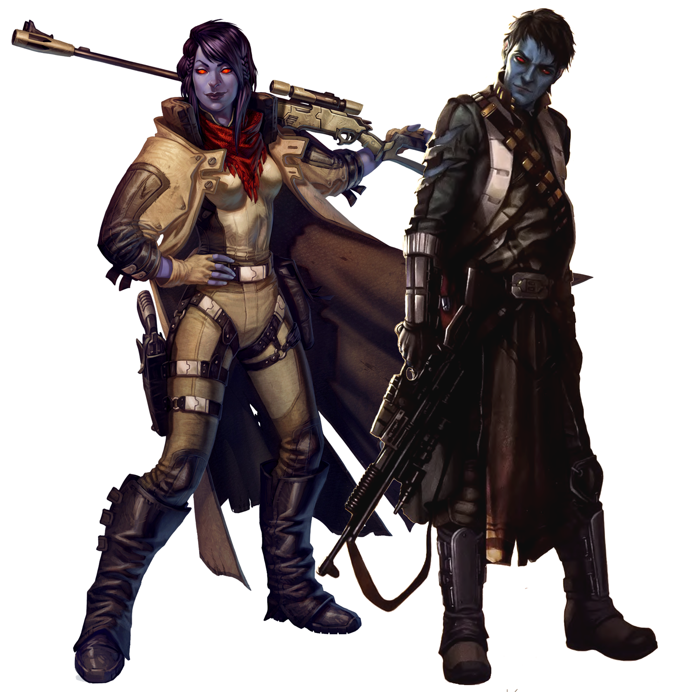

Chiss
Special Abilities: Chiss begin the game with one rank in Cool. They still may not train Cool above rank 2 during character creation.
Infravision: Chiss have adapted to be able to see in both the infrared and normal visual spectra. This enables Chiss characters to remove up to ■ added to checks by lighting conditions.
With a profound respect for art and creative achievements, the Chiss explore the mysteries of the galaxy while maintaining their own mysteries about their origins. They excel at problem solving and strategic thinking, and their compatibility with both humans and non-humans make them excellent bridges between disparate cultures.
Near-humans with dark-blue skin and glowing red eyes, the Chiss tend to run to the tall side of the human body type. Their skin color and eyes grow more intense the greater concentration of oxygen they are in. On average, Chiss tend to be more physically fit and overall more attractive than regular humans, assuming one is not thrown off by the skin and eyes. Their hair is universally jet black, save for the silvering found in those of advanced age.
Genetic analysis reveals that the Chiss are an offshoot of humanity, most likely dating back to the earliest eras of expansionism. Millennia of subterranean living altered their biology considerably. Not only did it result in the shift of their appearance from standard human but also their greater strength, endurance, and other physical qualities over baseline humans. They also reach physical maturity much more rapidly; most are physically and emotionally mature by their early teens, and on average, Chiss live about 80 standard years.
Cautious, thoughtful, and highly cultured, the Chiss have generally kept to themselves as a civilization for much of their long history. Rare individuals venture forth from the Chiss Ascendancy, as most prefer to keep to the security of a society they revere as superior. Art, culture, intellectual advancement, and discipline are highly prized qualities among the Chiss, and they have worked hard to build a society that relies not upon economic achievement but upon personal growth and contributions to the society as a whole.
Those Chiss that do venture into the galaxy at large do so generally with a profound respect for their peoples' desire to remain apart from the Empire and its struggles. Few beings outside of the Chiss even know where the Ascendancy is, which is the preferred state of affairs for them. Individual Chiss see the chance for great personal growth among the stars, as well as a chance to learn many things they can take back to their people.
Though most Chiss believe their world was a kind of tropical paradise when their ancestors first landed on it, the planet of Csilla entered a full-bore ice age nearly 5,000 years ago. Glaciers ultimately claimed the surface of the world, driving the technologically advanced people belowground. There, in thousands of warrens built to manage resources and energy effectively, with extensive networks of passages to keep the civilization connected and unified, the Chiss have thrived as a species.
Though any Explorer Chiss will know Basic, he's also fluent in a language only a member of his species can speak properly—Cheunh. Though Chiss are biologically connected to and similar to humans in most ways, they possess certain variances in their vocal apparatus that permit sounds and textures to their speech that make for a language many other species find strangely beautiful to hear. The structure of the language, steeped in context-derived combinations of words for idea expression, as well as the unique nature of Chiss vocal abilities, necessitated their adoption of trade languages. Sy Bisti and Minnisiat served the species well after they first reached outward from their homeworld, Csilla.
Despite the mysteriousness of their origins and home, Chiss are often valued for their temperament, intellect, and laser-like focus on solving problems. Being near-humans, Chiss have only very slight difficulty dealing with most Imperial operatives and bureaucrats, which can be an asset for any group of mostly non-human aliens that must interact with the Empire in some way.
Chiss are known for their patience and tactical aptitude, always acting with their opponent's next move (or three) in mind. In the Academy and Aristocra, youths are taught to painstakingly analyze the situation in order to formulate the most precise and effective response. This has resulted in a cultural taboo against preemptive strikes, so much so that an unprovoked advance during conflicts and war can result in exile from the Ascendency.
A player could role-play this tendency either way. An archetypical Chiss might wait until the very last moment to draw his blaster, ensuring that all possible alternatives are exhausted before resorting to violence. On the other hand, a rebellious or unorthodox Chiss may leverage the stereotype to his advantage, striking first when his opponent least expects it.